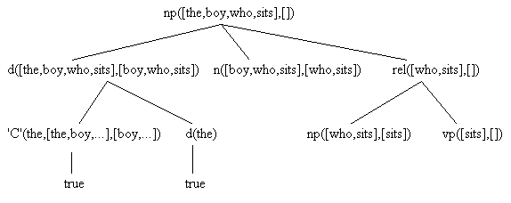

s --> np, vp. /* sentence */
np --> pn. /* noun phrase */
np --> d, n, rel.
vp --> tv, np. /* verb phrase */
vp --> iv.
rel --> []. /* relative clause */
rel --> rpn, vp.
pn --> [PN], {pn(PN)}. /* proper noun */
pn(mary).
pn(henry).
rpn --> [RPN], {rpn(RPN)}. /* relative pronoun */
rpn(that).
rpn(which).
rpn(who).
iv --> [IV], {iv(IV)}. /* intransitive verb */
iv(runs).
iv(sits).
d --> [DET], {d(DET)}. /* determiner */
d(a).
d(the).
n --> [N], {n(N)}. /* noun */
n(book).
n(girl).
n(boy).
tv --> [TV], {tv(TV)}. /* transitive verb */
tv(gives).
tv(reads).
The grammar most likely looks very familiar in many respects. We will discuss
the special syntactical forms after showing a sample usage of the grammar.
Notice that this file has both grammar rules (formed with '-->') and ordinary
Prolog rules (formed with ':-'). This file is loaded into Prolog in the
usual way, and the grammar rules are converted to parsing rules. We also
discuss the conversion after the sample usage.
The first goal leads to a successful parse, whereas the second, although it is a good English sentence, does not conform to the grammar as given -- the grammar requires transitive verbs to have objects. The last two goals request the internal Prolog clause definitions for 'np' and for 'd'. (Actually, the appropriate predicates would have to have been declared dynamic to do this in Quintus Prolog.) For example, the correspondence between the second 'np' grammar rule and the Prolog parse rule looks like this when the two are aligned on the page:?- s([the,boy,who,sits,reads,a,book],[]). yes ?- s([henry,reads],[]). no ?- listing([np,d]). np(A,B) :- pn(A,B) . np(A,B) :- d(A,C) , n(C,D) , rel(D,B) . d(A,B) :- 'C'(DET,A,B) , d(DET) . d(a) . d(the) . yes
Doing the same for the 'd' category we get:np -->det, noun, rel. np(A,B) :- det(A,C), noun(C,D), rel(D,B).
d --> [DET], {d(DET)}.
det(A,B) :- 'C'(DET,A,B), d(DET) .
The 'd' in the head of the grammar rule is a grammar category(determiner),
whereas the 'd' in the body of the grammar rule is encapsulated inside
braces {} and is therefore a Prolog literal (an embedded Prolog goal).
Terminal data in the grammar database, such as 'n(boy).', already have
their Prolog form so do not need to be translated. The 'C' predicate is
built-in; its definition is effectively given by the clause:
Thus, 'C' means that X "connects" all of a list [X,...] with its tail.'C'(X,[X|R],R).
A third kind of grammar rule is like the first one for 'rel'. Such a rule specifies an optional grammatical construction.
A successful parse for the goalrel --> []. rel(A,A).
will unify this main goal with the head of the second 'np' Prolog rule. Here is a clause tree showing how the list of words is parsed or analyzed from left to right by the appropriate grammar rules.?- np([the,boy,who,sits],[])

Fig. 7.2
Exercise 7.2.1 Finish drawing this program clause tree, and give the Prolog clauses that would be used, if one continued to fill out the tree until one obtained all true leaves.
The program clause tree gives a visual representation to how the variables in the Prolog parsing rules are supposed to match initial portions of the remaining input that is being parsed. If we inspect a relevant instance of the 'det' rule we could have the following:
DCG rules can contain arguments, using auxiliary variables. The creation of parse trees is one use for auxiliary variables. Another use is to force number agreement for subject and verb. Both of these uses are illustrated by the grammar in file eng2.pro.
s(s(NP,VP)) --> np(Num,NP), vp(Num,VP).
np(Num,np(PN)) --> pn(Num,PN).
np(Num,NP) -->
d(Det),
n(Num,N),
rel(Num,Rel),
{build_np(Det,N,Rel,NP)}. /* embedded Prolog goal */
/* Prolog rules for build_np */
build_np(Det,N,rel(nil),np(Det,N)).
build_np(Det,N,rel(RP,VP),np(Det,N,rel(RP,VP))).
vp(Num,vp(TV,NP)) -->
tv(Num,TV),
np(_,NP).
vp(Num,vp(IV)) --> iv(Num,IV).
rel(_Num,rel(nil)) --> [].
rel(Num,rel(RP,VP)) -->
rpn(RP), vp(Num,VP).
pn(sing,pn(PN)) --> [PN], {pn(PN,_X)}.
pn(plu,pn(PN)) --> [PN], {pn(_X,PN)}.
pn(mary,marys).
pn(henry,henrys).
rpn(rpn(RPN)) --> [RPN], {rpn(RPN)}.
rpn(that).
rpn(which).
rpn(who).
iv(sing,iv(IV)) -->[IV], {iv(IV,_X)}.
iv(plu,iv(IV)) --> [IV], {iv(_X,IV)}.
iv(runs,run).
iv(sits,sit).
d(d(DET)) --> [DET], {d(DET)}.
d(a).
d(the).
n(sing,n(N)) --> [N], {n(N,_X)}.
n(plu,n(N)) --> [N], {n(_X,N)}.
n(book,books).
n(girl,girls).
n(boy,boys).
tv(sing,tv(TV)) --> [TV], {tv(TV,_X)}.
tv(plu,tv(TV)) --> [TV], {tv(_X,TV)}.
tv(gives,give).
tv(reads,read).
:- ['read_line'].
parse :- write('Enter English input: '),
read_line(Input),
trim_period(Input,I),
nl,
s(Parse_form,I,[]),
write(Parse_form),
nl, nl.
trim_period([.],[]).
trim_period([X|R],[X|T]) :- trim_period(R,T).
The grammar in file eng2.pro illustrates another construction that Prolog
allows, that being the embedding of Prolog goals within a grammar rule,
as in the new 'np' grammar rule. Such embedded goals are surrounded with
braces {}, and can use (i.e., share and restrict) the logical variables
belonging to the rest of the grammar rule. The purpose of the embedded
goal here is to ignore a parse tree branch for an optrel when the input
does not have one. This will be illustrated by some sample goals:
The student should list the internal form of the some of the Prolog rules to see how they correspond to the source grammar rules, and trace the satisfaction of several parsing goals. An excellent reference for definite clause grammars and Prolog is Pereira and Shieber (1987), from which portions of the grammars in eng1.pro and eng2.pro were borrowed. That reference also has several interesting exercises that ask the student to add various English grammatical categories to the definite clause grammar, and the authors construct a sample natural language interface to a little knowledge base system.?- parse. Enter English input: The boy who sits reads the book. s(np(d(the),n(boy),rel(rpn(who),vp(iv(sits)))),vp(tv(reads),np(d(a),n(book)))) yes
Exercise 7.2.2 Design a pretty printer for the parse forms, so that one gets them displayed something like this:
Exercise 7.2.3 Add prepositional phrases to the grammar.s(np(d(the), n(boy), rel(rpn(who), vp(iv(sits)))), vp(tv(reads), np(d(a), n(book))))
Exercise 7.2.4 Add adjectives to the grammar.